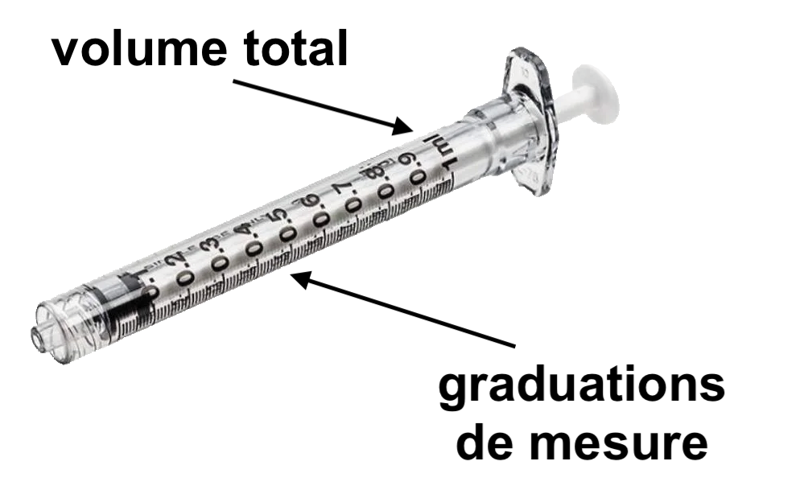
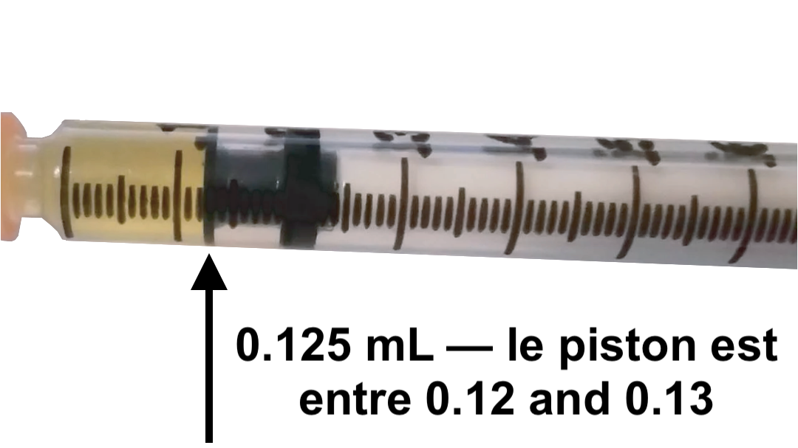
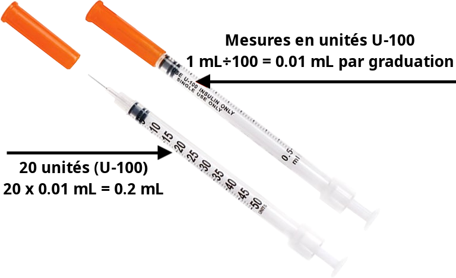

Top 6 des erreurs d’injection
By Aripublished 2026-10-23
Traduction et adaptation aux ressources françaises par uriel.
Version originale anglaise disponible ici: Top 6 Injection Mistakes.
Top 6 des erreurs d’injection

(et comment les éviter)
Mal ouvrir le haut de sa fiole (… ou ne pas l’ouvrir du tout)
Si ta fiole a un petit disque en métal recouvrant l’opercule, il faut l’enlever avant de prélever…


Mais n’enlève pas tout le cerclage en métal qui maintient l’opercule en place !
Comment exposer l’opercule correctement :


Désinfection improvisée de fiole
N’essaie pas de désinfecter ta fiole avec :
- du gel hydroalcoolique
- de la javel
- de la biseptine
- de l’eau
- de l’alcool à 100%
ou n’importe quoi qui n’est pas…

des tampons d’éthanol ou d’alcool isopropylique à 70% !1


Si tu n’en a plus, il vaut mieux sauter la désinfection de ta fiole cette fois-ci.
Percer la fiole avec une aiguille-paille
Bien que certains guides le recommandent, n’utilise pas d’aiguille 18G pour prélever dans ta fiole.
Ces recommendations proviennent originellement de recherche dans un cadre hospitalier, où les pro de santé donnent plusieurs injections par jour à différent·es patient·es.
Dans ce contexte, les fioles de médicaments se vident très vite et il est logique d’utiliser des grosses aiguilles pour prioriser la vitesse de prélèvement. Mais pour les personnes trans qui utilisent une même fiole sur plusieurs mois voire années, il nous faut prendre plus soin des opercules de nos fioles ! Une opercule abîmée compromet la stérilité de ta fiole.
Des études sur combien de prélèvements peut résister une fiole montrent que des aiguilles de 22G ou plus causent moins de dégâts que des aiguilles plus grosses.2

Rappel : gauge plus grande (G) = aiguille plus fine !
Stériliser tes aiguilles stériles
Oui, Trace Lysette l’a fait dans le film Monica.
C’est pas une bonne idée pour autant !
Les aiguilles sont stériles à l’ouverture de l’emballage.
Tant que l’emballage n’est pas abîmé, tu peux l’utiliser dès que tu l’ouvres ! Essayer de laver l’aiguille avec quoi que ce soit ne fait qu’introduire des potentiels contaminants dans ta fiole et dans ton corps.


Pour les seringues à insuline qui sont emballées à plusieurs dans un sachet, un capuchon orange couvre l’aiguille et le piston. C’est ça qui les garde stérile !

Mal lire les graduations de ta seringue
Fais attention à bien lire les unités sur ta seringue. La dose se mesure depuis le haut du piston.


0.1mL est une petite quantité de liquide dans la plupart des seringues. Ne te donne pas 10 fois ta dose par erreur !
Pour les personnes qui injectent 0.1mL ou moins, les seringues à insuline existent en format 0.5 et 0.3mL et peuvent s’utiliser pour des injections sous-cutanées. C’est plus simple et plus précis d’utiliser ces petites seringues pour des petites doses.

Les graduations des seringues à insuline correspondent à des unités.
1mL = le chiffre U de la seringue.
Par exemple :
Sur une seringue U-100, 100 unités = 1mL donc 10 unités = 0.1mL
Sur une seringue U-40, 40 unités = 1mL donc 10 unités = 0.25mL
Jeter ta dose en changeant d’aiguille
Les aiguilles détachables et les seringues ont toujours un espace que le piston ne peut pas entièrement vider, qu’on appelle l’espace mort.
![Illustration montrant quatre type de seringues et d'aiguille. 1 : seringue standard avec aiguille standard détachable, espace mort important (typiquement 92 µL). 2 : seringue modifiée avec aiguille standard détachable, piston fin s'étirant jusque dans la base de l'aiguille, espace mort réduit (typiquement 59 µL). 3 : seringue standard avec aiguille à faible espace mort, la base de l'aiguille est fine et s'étend dans la base de la seringue, espace mort plus faible (aussi peu que 17 µL). 4 : seringue à insuline à faible espace mort avec aiguille sertie, espace mort très faible (typiquement 3 µL)](6-diagrame-espace-mort.png) Attributions: exchangesupplies.org Low Dead Space Injecting Equipment: A Briefing(traduction française en interne)
Attributions: exchangesupplies.org Low Dead Space Injecting Equipment: A Briefing(traduction française en interne)
Quand tu changes d’aiguille, pense bien à prélever un peu d’air avant d’enlever ton aiguille de prélèvement pour ne pas perdre ta dose à l’espace mort ! On peut utiliser de l’air pour vider l’espace mort avant d’injecter avec la technique de l’air-lock.
Ressources
Acheter du matériel d’injection
- Infos pour la France : matériel d’injection et DIY | partagenre
- Site français Robé Médical
- Infos internationales : reddit TransWiki
- Site canadien : Med Needles
Guide d’auto-injection
Why 70% Ethanol is the Star of Sterilization: Mechanisms and Limitations↩︎
Ponto, J. A. (2013). Self-sealing capacity of vial stoppers after multiple needle punctures. Journal of the American Pharmacists Association: JAPhA, 53(1), 58–60. https://doi.org/10.1331/JAPhA.2013.12064↩︎